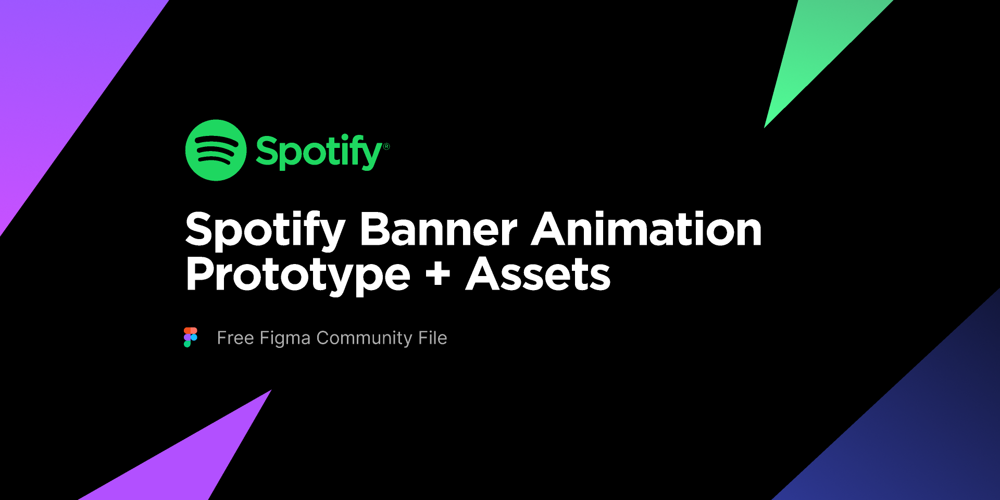

Upcoming Events 📅
Don't miss any of your important events. Stay Updated
Spotify is a popular music streaming service that offers users access to a vast library of songs, albums, and podcasts. Launched in 2008, it has grown to become one of the leading platforms in the industry. With a free, ad-supported tier and a premium subscription option, Spotify caters to a wide range of preferences and budgets. The service provides personalized playlists like Discover Weekly and Wrapped, which use algorithms to suggest music based on user behavior and preferences. Users can also create and share their own playlists, follow artists, and explore curated content across various genres. Available on multiple devices, including smartphones, tablets, and computers, Spotify allows for seamless music streaming and offline listening. Its user-friendly interface and extensive catalog make it a go-to choice for music enthusiasts worldwide.

Photo Gallery
Free food|pets are not allowed
Spotify, launched in 2008, revolutionized music streaming with its vast library of songs and personalized playlists. Its freemium model offers both ad-supported and premium ad-free options. Features like Discover Weekly and Wrapped leverage algorithms to tailor music recommendations. Spotify's platform supports podcasts and integrates with various devices, making it a versatile choice for music lovers worldwide. Its user-friendly interface and innovative features have cemented its place as a leading music streaming service.

Free food|pets are not allowed
Spotify, launched in 2008, revolutionized music streaming with its vast library of songs and personalized playlists. Its freemium model offers both ad-supported and premium ad-free options. Features like Discover Weekly and Wrapped leverage algorithms to tailor music recommendations. Spotify's platform supports podcasts and integrates with various devices, making it a versatile choice for music lovers worldwide. Its user-friendly interface and innovative features have cemented its place as a leading music streaming service.
contact
91+1234567890
9th street avenue park,trichy,625620